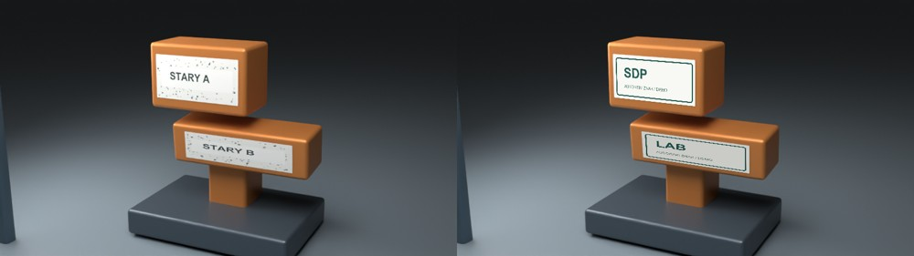
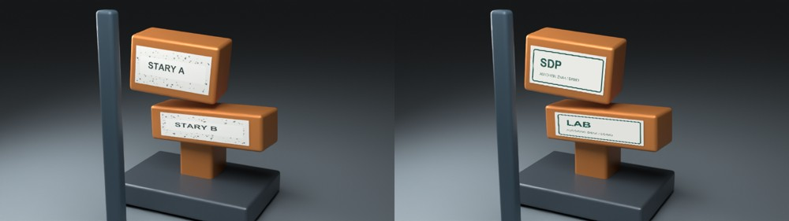
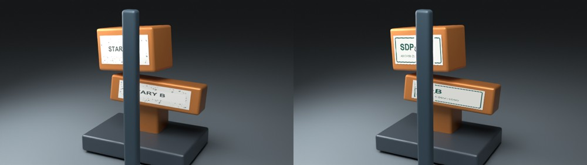
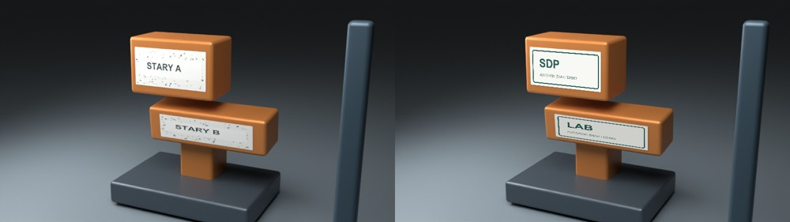

Autorski test / niewdrożony
Dwa znaki.
Ruch, perspektywa i przesłonięcie.
Rzeczywiste śledzenie dwóch powierzchni po wyrenderowaniu własnego materiału. Nowe logo jest nakładane w postprodukcji; ruchu nie kopiujemy z animacji 3D.
To kontrolowany test na własnym modelu i własnych znakach. Nie jest materiałem klienta, realizacją komercyjną ani dowodem automatycznego usunięcia logo z dowolnego filmu.
Przed / po
Po lewej materiał źródłowy, po prawej wynik. Dwie powierzchnie poruszają się niezależnie i zmieniają perspektywę; belka przechodzi przed obiektem.
Co faktycznie sprawdzono
- 60 klatek × 2 śledzone powierzchnie, 20 kl./s, 800 × 450.
- SIFT → dopasowanie cech → RANSAC → homografia. Dane geometrii nie sterują położeniem nowego znaku.
- Kontrola porównuje wynik śledzenia z osobną geometrią wzorcową: maks. błąd narożników 3.05px, mediana 0.52px przy tej rozdzielczości.
- Rzeczywiste przesłonięcie nowego znaku przez obiekt pierwszego planu.
- Maska pochodzi z własnej sceny, nie z automatycznego wycinania dowolnego filmu. W zleceniu odpowiednie maski trzeba przygotować dla rzeczywistych ujęć.
- Jasność znaku dopasowana na podstawie obrazu; krawędzie wygładzone.
Zbliżenie kontroli klatek




Źródła i granice
Model, tekstury, znaki i animacja są własne. Plik .blend zawiera spakowane własne tekstury. Źródła Python i log pozwalają sprawdzić wykonanie. Ten przykład nie obejmuje cudzych znaków ani modeli.
Naturalność retuszu, rozmycie ruchu i maski ocenia się osobno w każdym ujęciu klienta. Brakujący materiał źródłowy trzeba obejrzeć przed potwierdzeniem ostatecznej realizacji.
Pobierz komplet źródeł ZIP · Natywny plik Blender · Dane kontroli · Oryginał MP4 · Wynik MP4
Autorska próbka · bez publikacji i wysyłki z tego pliku